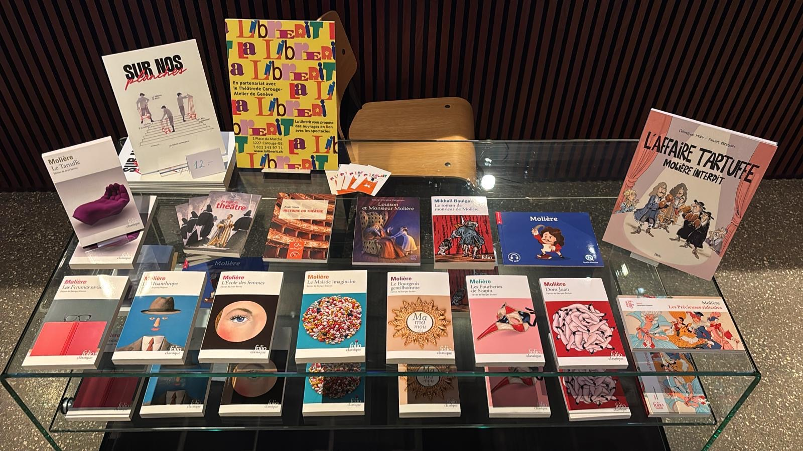
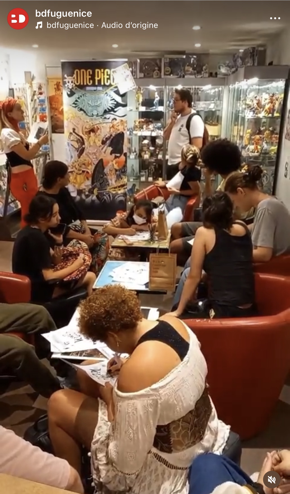
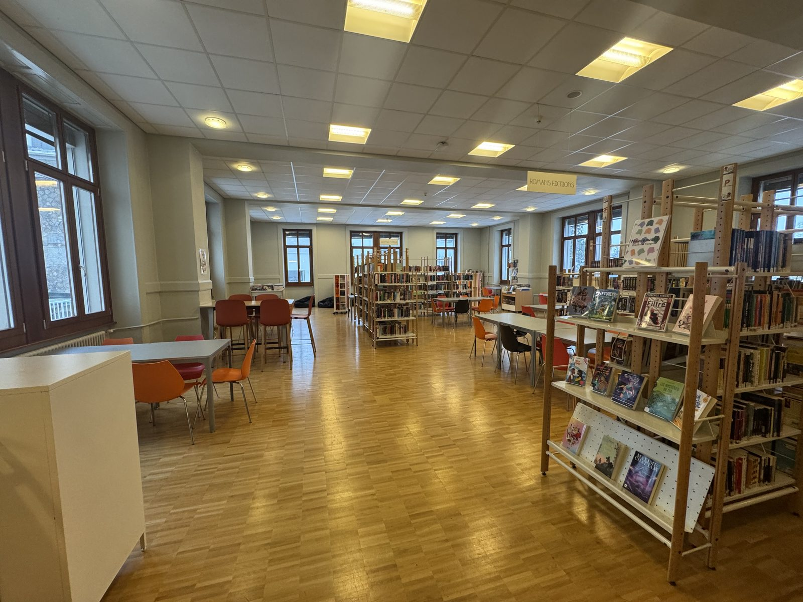
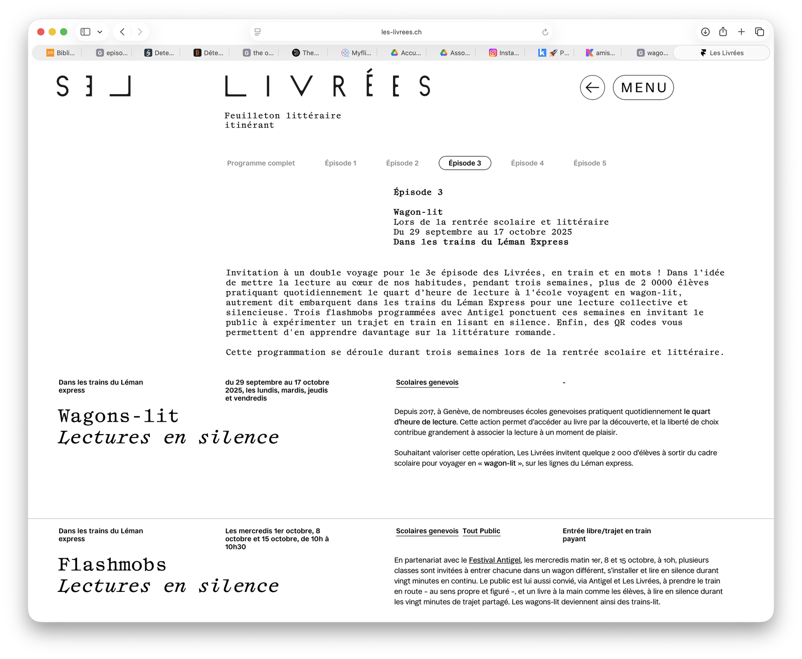

Réalisations et preuves
Cette page rassemble une sélection de projets, réalisations et expériences significatives de mon parcours. Chacun d'eux constitue une trace concrète de compétences mobilisées dans des contextes variés : médiation documentaire, valorisation des ressources, transmission, coordination ou accompagnement des publics. À travers ces projets, il s'agit de donner à voir non seulement ce que j'ai réalisé, mais aussi la manière dont ces expériences ont contribué à construire et à affiner mon positionnement professionnel.

Projet EMI à l'Institut Florimont
Conception et mise en œuvre d'un projet autour de l'éducation aux médias et à l'information dans le cadre de la Semaine de la presse et des médias, au CDI secondaire de l'Institut Florimont.

Librerit : fonds BD, jeunesse et manga
Participation à la structuration et à la valorisation d'un fonds mêlant jeunesse, bande dessinée, manga et littérature, dans une librairie indépendante à Carouge.

BDFugue Nice : médiation en librairie spécialisée
Expérience en librairie spécialisée bande dessinée, marquée par le conseil au public, la valorisation des fonds et le développement d'une culture éditoriale approfondie en BD.

CDI Florimont : documentation, accueil et médiation
Immersion dans un environnement documentaire scolaire suisse, entre accueil des usagers, traitement documentaire, médiation de la lecture et accompagnement des publics.

Les Livrées / Wagon-lit : médiation autour de la lecture
Intervention auprès d'élèves de cycles primaires et d'adolescents allophones autour de la lecture, du texte et de la découverte du livre, dans le cadre d'une action de médiation culturelle.

Coordination associative à l'AMBD
Participation à la structuration administrative, documentaire et communicationnelle de l'Association des Amis du Musée de la Bande Dessinée, dans le cadre d'un projet muséal en construction.